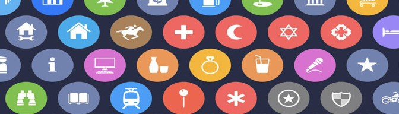
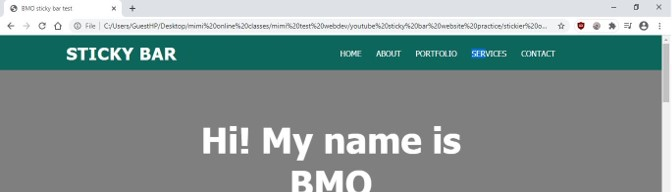
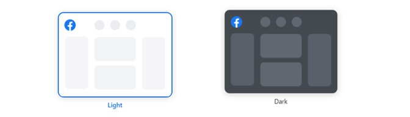
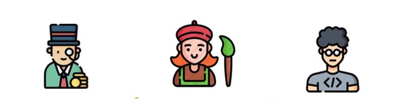
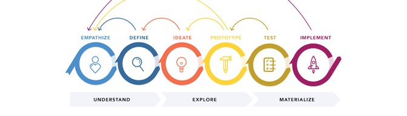
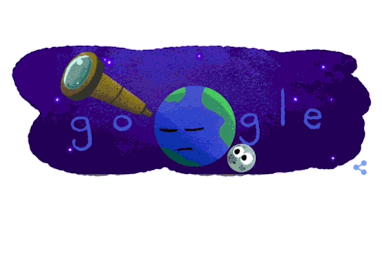

The lively introductions were not just for us, but also for the lesson. The way Miss asked us to describe our favorite applications gave me a glimpse into how one should think when designing UI/UX. It seems to ask questions like "Why these colors? Why is the navigation bar like this? Why make icons round and not square? How come certain symbols are universally understood?" It got me excited for the lessons to come.
I was really psyched to design my own website for the introduction trello card. Before classes started, I tried learning HTML and CSS. So far I learned how to compartmentalize elements into containers, and how containers can act as backdrops for UI.
Deploying the website was something entirely new for me. Thankfully, a kind blockmate taught me how to set it up on github and heroku. I then had more appreciation for full stack web development. We've been learning python, and with pandas able to create dataframes and generate html, the two languages become intertwined. I am fascinated by how python flask can optimize markup languages, but I lack understanding the code by myself.
When describing my favorite application, it was difficult describing in depth the experience of using Facebook. I wanted to describe how the UI was designed, but even after inspecting elements, I don't get it.
I was surprised, then frustrated, then IMMENSELY PLEASED by userinyerface. It is like the front end counterpart to capture the flag and similar to IQ app games. The game made me realize how standardized certain interaction designs are. Many examples can be cited: the introductory button and varying text decorations, the unnecessary error message, the color changing dichotomy selector, and the punny captcha. I had preconceived notions of how to register because of social media, but this game made me think outside the box. It made me doubt what I truly know about UI. UX is no doubt frustrating, no doubt (double doubt for emphasis).
Due to internet failure, I was unable to attend the rest of the lesson. Based on the recording, there was a discussion about personas. The concept is also new to me, and the linkedin videos supplied me with all my current knowledge. It is important to design for the users, and it is indeed helpful to have data regarding their pain points. Since I am inexperienced and have no clear problem I want to technologically resolve, I could not fathom what kinds of features the users needed. The process of creating the personas I based on my template. I kept going back and forth rewriting their attributes because I still couldn't grasp the idea well.
Finally getting to experience kahoot, I am satisfied knowing I partly understood the lesson. Based on the quiz, I lack empathy when in comes to user design. That is literally the first step and explains why I find it difficult to create personas. My process skips to ideate, then gets crushed by scenario building. Collecting data about the users is a step I underestimate greatly.
The discussion was about clearly defining design, and giving purpose to what tech solution we will be providing. Design as it turns out, is not just aesthetics on the outside, but also the internal model. Being able to comprehend complex code at first glance partially means the system is well-designed.
There was emphasis as well on the design life cycle. My mind could not accept the circular sequence of reassessing before moving onto the next step. It is indeed more practical that way and I am overeager. Hopefully for future activities I'll plan making my outputs more methodical to save on time.
In conclusion, seeing the standardized format for outputs made me determined to update my own. Even if I am dashing into activities like a blind bat, and then I keep going back to polish them, it is enjoyable to synthesize graphics. My website is not professional looking yet and I do not want to resort to templates, but it is a learning process. Eventually, I’ll understand what makes a website look professional, then I can set the standards for what an engaging website is. Too early to say yes, but it is fun chasing this aspiration.
[1] https://www.macstories.net/linked/the-iconography-of-apple-maps/
[2] personal project, unpublished
[3] https://www.heroku.com/elements/buttons and http://www.molecularecologist.com/2013/11/using-github-with-r-and-rstudio/
[4] https://www.howtogeek.com/665902/how-to-switch-to-the-new-facebook-desktop-interface/
[5] https://userinyerface.com/game.html
[6] https://asiapacificcollege-my.sharepoint.com/:p:/r/personal/dpcaubang_student_apc_edu_ph/_layouts/15/Doc.aspx?sourcedoc=%7BD465FE27-DE65-4756-A33E-07382BC25D45%7D&file=A2_CAUBANG_DEMETERRENEE.pptx&action=edit&mobileredirect=true
[7] https://xd.adobe.com/ideas/perspectives/leadership-insights/building-resilience-empathy-in-time-of-crisis/
[8] https://www.thinkingbusinessblog.com/2016/07/27/6-simple-steps-to-align-your-staff-with-business-objectives/
[9] https://medium.com/@bhmiller0712/what-is-design-thinking-and-what-are-the-5-stages-associated-with-it-d628152cf220
[10]https://www.space.com/35808-exoplanet-discovery-trappist-1-google-doodle.html
https://uxdesign.cc/why-ux-and-ui-should-remain-separate-7d6e3addb46f?gi=4e0c989acde8
This website was developed as a major requirement for User Interface and User Experience Design and Programming (USERDES). This website falls under the protection of Creative Commons. If you wish to use the original content in this website for your own purposes, credit the website developer.